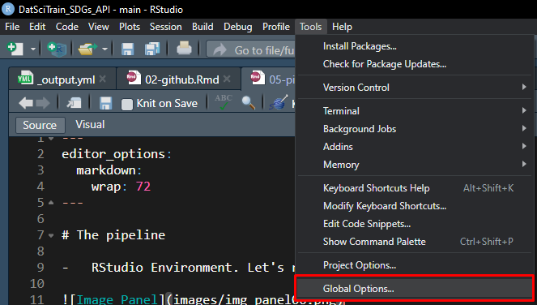
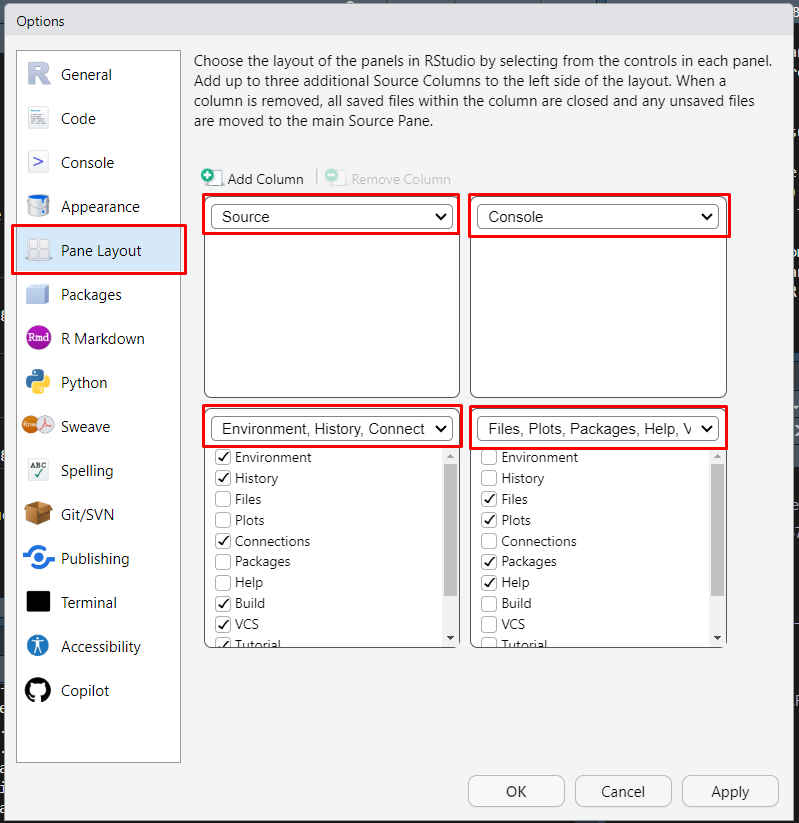

6 The pipeline
- RStudio Environment. Let’s rearrange the panel layout:

Tools>Global Options…

Pane Layout
6.1 Essential data management and folder structure
├── config.R
├── data_derived
│ ├── Australia_SDG_14.csv
│ ├── sdg_14.csv
│ ├── sdg_14_unclos_map.csv
│ └── sdg_3_1_2.csv
├── data_provided
│ ├── country-to-region-mapping.csv
│ ├── Ocean Accounts Diagnostic Tool_formatted.pdf
│ ├── SDG-DSD-Guidelines.pdf
│ ├── SDG.xlsx
│ └── SDG_Updateinfo.xlsx
├── DatSciTrain_SDGs_API_R.Rproj
├── figures_and_tables
│ ├── fig2.png
│ └── sdg14_Australia.docx
├── LICENSE
├── R
│ ├── do_clean.R
│ ├── do_get_sdg_api.R
│ ├── do_map.R
│ ├── do_plot.R
│ └── do_tab_Australia.R
├── README.md
└── run.R6.2 config.R
# packages
if (!require(data.table)) {
install.packages("data.table")
library(data.table)
}
if (!require(ggplot2)) {
install.packages("ggplot2")
library(ggplot2)
}
if (!require(sf)) {
install.packages("sf")
library(sf)
}
if (!require(RColorBrewer)) {
install.packages("RColorBrewer")
library(RColorBrewer)
}
if (!require(rnaturalearth)) {
install.packages("rnaturalearth")
library(rnaturalearth)
}
if (!require(rnaturalearthdata)) {
install.packages("rnaturalearthdata")
library(rnaturalearthdata)
}
## set folder names
folder_names <- c("data_derived", "data_provided", "figures_and_tables")
for (folder_name in folder_names) {
if (!dir.exists(folder_name)) {
dir.create(folder_name)
cat("Folder", folder_name, "created.\n")
} else {
cat("Folder", folder_name, "already exists.\n")
}
}
## source functions
file_list <- list.files(path = "R", pattern = "\\.R$", full.names = TRUE)
# Source each .R file
for (file in file_list) {
source(file)
}6.3 run.R
source("config.R")
### 1. Download ####
# Use the function to download SDGs data
do_get_sdg_api()
### 2. Data cleaning ####
# Function to clean the data downloaded
indat <- do_clean()
### 3. Tabulating ####
tab <- do_tab_country(indat, country = "Indonesia")
### 4. Visualise ####
# Generate and interactive plot with the data cleaned
do_plot()
### 5. Map ####
do_map()6.4 do_get_sdg_api.R
do_get_sdg_api <- function(
output = "data_derived/sdg_14.csv"
){
# (Client URL) command line tool that enables data exchange between a device
# and a server through a terminal
curl <- paste0(
'curl -X POST --header "Content-Type: application/x-www-form-urlencoded" ',
'--header "Accept: application/octet-stream" ',
'-d "goal=14" ',
'"https://unstats.un.org/sdgapi/v1/sdg/Goal/DataCSV" -o',
output)
# Execute cURL
system(curl)
}6.5 do_clean
do_clean <- function() {
# options(scipen = 1000)
# Load data
indat <- fread(file.path("data_derived", "sdg_14.csv"))
# mapping <- fread(file.path("data_provided", "country-to-region-mapping.csv"))
# Keep only the values that are either blank or 'A' under 'Observation Status', drop the rest
indat <- indat[`[Observation Status]` == "" | `[Observation Status]` == "A"]
# Replace '-' with '_' across all disaggregation values
cols_to_replace <- grep("\\[.*\\]",
names(indat),
value = TRUE)
indat[, (cols_to_replace) := lapply(.SD, function(x) gsub("-", "_", x)),
.SDcols = cols_to_replace]
return(indat)
}